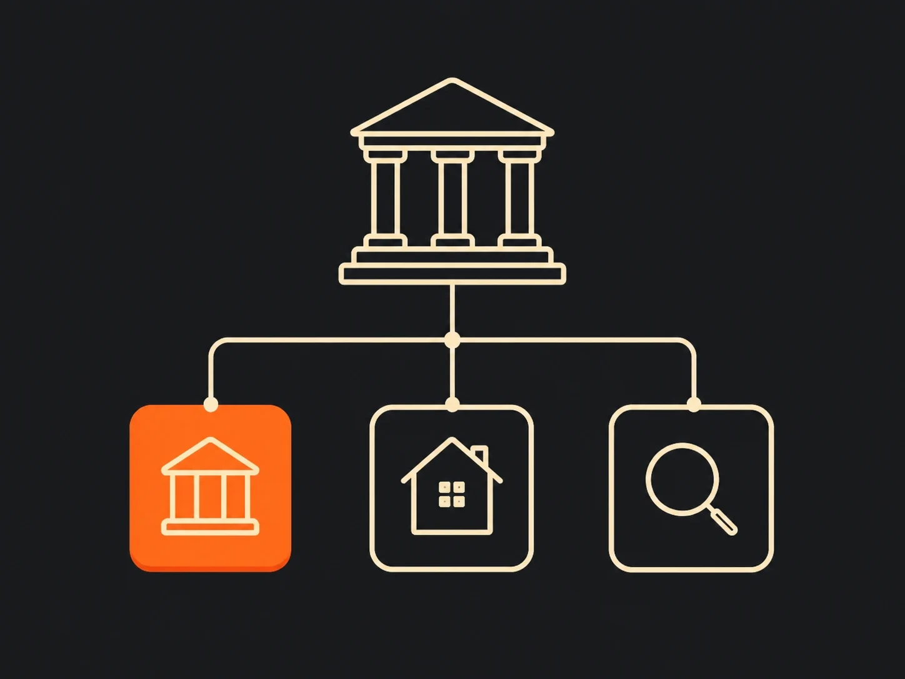
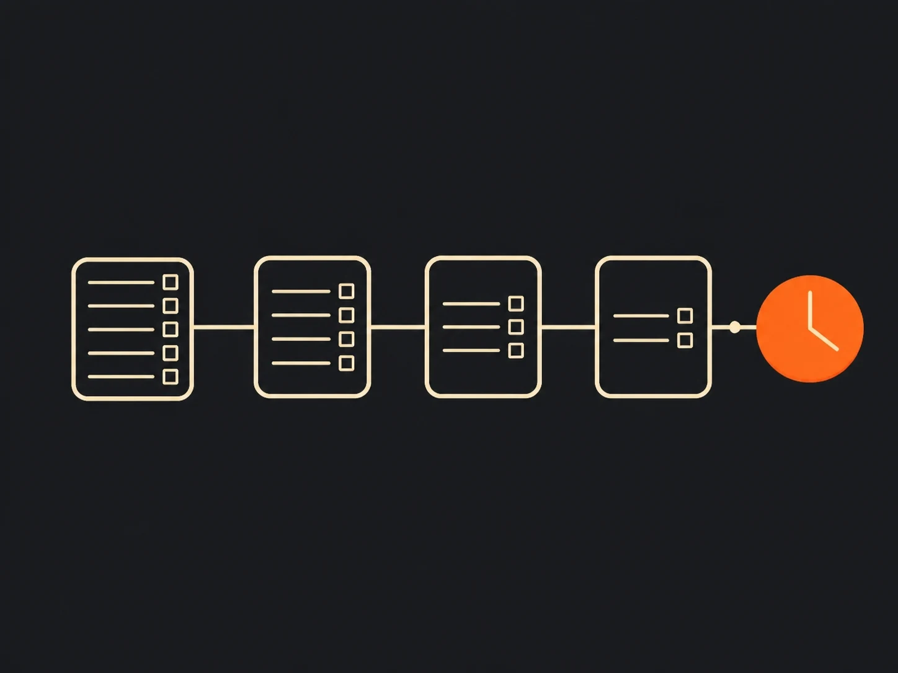

An eviction judgment proves the debt but does not move the money
The judgment is valuable because it resolves the amount owed and gives the landlord access to post-judgment remedies. It is not valuable because the court starts collecting for you. In most eviction cases, the court restores possession of the unit and may also enter a money judgment for unpaid rent, court costs, attorney's fees if allowed, and other awarded charges. After that, enforcement becomes the creditor's job.
That is why eviction cost recovery should be treated as a separate operating motion rather than a clerical tail end of the lawsuit. The work after judgment looks more like targeted rental debt collection and move-out debt recovery than litigation administration, and it belongs in the same conversation as what happens when unpaid rent goes to collections. Once that distinction is clear, the rest of the process becomes easier to manage.
What the judgment can include after court
A money judgment usually captures more than just the skipped rent. Depending on the lease terms and the governing state law, it can include the unpaid balance, court filing costs, service fees, attorney's fees, and post-judgment interest. The exact mix matters because every additional awarded item becomes part of the enforceable balance.
- Unpaid rent and other lease charges that were actually awarded
- Court costs and filing expenses tied to the eviction case
- Attorney's fees if the lease or statute supports them
- Post-judgment interest at the rate set by the governing state
Interest is where many files quietly change shape. The legal balance can keep growing while the practical path to collection gets harder, which is one reason judgment work should stay tied to the broader recovery program described in property management collections and collection support for property managers. That leads directly to the question that matters most: which enforcement tools are actually available where the debtor now lives and holds assets.
Collection tools change by state, so the playbook has to change too
The court order may look similar across states, but the collection toolbox does not. Texas and California are useful contrasts because their official guidance points landlords toward very different post-judgment strategies.
| Issue | Texas | California | Practical effect |
|---|---|---|---|
| Current wages | Current wages are generally exempt from garnishment for ordinary debt collection (Tex. Prop. Code Ch. 42). | California courts list wage garnishment as a collection route after a Writ of Execution (California Courts). | Texas recovery usually shifts away from payroll and toward assets; California can leave wage-based collection on the table. |
| Bank accounts | Bank garnishment can reach non-exempt funds once the account is identified (Tex. Civ. Prac. & Rem. Code Ch. 63). | California calls a bank levy a one-time action that requires a Writ of Execution and the correct bank office for service (California bank levy guide). | Bank information is high-value in both states, but California's courts spell out the procedure more directly for self-help creditors. |
| Real property liens | Texas uses abstract-of-judgment procedures to reach real property (Tex. Civ. Prac. & Rem. Code Ch. 52). | California instructs creditors to record an Abstract of Judgment to create a lien on real property (California lien guide). | Liens can preserve leverage even when immediate cash collection is not available. |
| Judgment life | Texas guidance explains that a judgment can become dormant if it is not renewed and may be revived within the period state law allows (Texas State Law Library). | Most California judgments expire after 10 years unless renewed, and a renewal generally lasts another 10 years (California Courts; renewal guide). | The calendar is part of the asset strategy, not just a legal housekeeping item. |

That variation is the operational reason generic recovery playbooks underperform. A landlord working with a collection agency for landlords or a tenant debt specialist should expect the agency to talk first about venue, exemptions, and locate work, not just about call cadence. The state-specific examples below show why.
Texas often turns judgment collection into a bank-and-lien exercise
For Texas landlords, the hardest part of judgment collection is often not the judgment itself but locating reachable assets. Texas protects current wages from ordinary garnishment, so the collection path usually runs through non-exempt bank funds, real-property liens, and other non-exempt assets rather than through the debtor's paycheck (Texas Property Code Chapter 42; Texas garnishment statutes).
The Texas State Law Library's creditor guide also underscores that judgment life is not indefinite. Creditors have to watch dormancy and revival rules and make renewal decisions on time (Texas State Law Library). In practice, that means the value of a Texas placement is heavily tied to skip tracing, bank-account development, and lien strategy, not simply to outbound contact volume. That is also why Texas-specific portfolio planning fits naturally beside Texas property manager collection guidance and unpaid-rent agency placement decisions.
California shows how another state can keep more tools on the table
California's courts present a broader menu. Their self-help guidance tells judgment creditors to start with a Writ of Execution and then use that writ for a bank levy or wage garnishment, depending on what asset is available (California Courts). The bank-levy guidance adds an important tactical point: the levy is a one-time action, so the timing and the bank identification both matter (California bank levy guide).
California also gives creditors a clearer long-tail path on real property and renewals. The courts explain how to record an Abstract of Judgment for a lien and separately explain that most judgments expire after 10 years unless renewed, with renewals generally lasting another 10 years and no stated cap on the number of renewals (California lien guide; California renewal guide). That does not make California judgments easy. It just means the enforcement mix is different, which is exactly why national landlords should avoid assuming the Texas path applies everywhere else.
Timing matters because the file gets colder before the judgment does
Legal enforceability and practical collectability are not the same thing. A judgment may still be alive on paper while the debtor's usable bank information, employer records, forwarding address, and real-property footprint have all changed. That is the real aging problem, and it starts well before the outer legal deadline.

- Fresh data matters. Lease applications, move-out statements, prior bank information, and forwarding contacts are most useful close to move-out.
- State deadlines still matter. California's courts tell creditors to renew before the 10-year deadline, and Texas creditors have their own dormancy and revival rules to track (California Courts; Texas State Law Library).
- Bankruptcy can interrupt the file. The CFPB says debt collectors must stop collection while the bankruptcy is pending, and a discharge can permanently bar collection of the personal debt (CFPB bankruptcy guidance).
- Reporting windows are separate. The CFPB says most negative information can generally be reported for seven years, which is a reporting clock, not an enforcement clock (CFPB credit reporting guidance).
Put differently, a judgment should not sit untouched just because its legal life sounds long. The question is whether the file is still actionable in the real world, and that answer usually gets worse with delay.
Compliance does not disappear after judgment
A judgment changes the remedy, not the regulatory baseline for third-party collection. The FTC's published FDCPA text says a consumer debt remains a debt even if it has been reduced to judgment, and the CFPB's Regulation F is the implementing rule that governs modern debt-collector communications, validation information, time-barred debt rules, and other conduct standards (FTC FDCPA text; CFPB Regulation F). That is why post-judgment placement still belongs with an FDCPA-compliant collection agency and why the practical rules summarized in our FDCPA and Regulation F guide still apply after court.
Credit reporting is a separate question. The FDCPA and Regulation F address collection conduct; the Fair Credit Reporting Act governs what can appear on consumer reports and for how long. The CFPB says most negative information can generally be reported for seven years, and information about a lawsuit or judgment may be reported for seven years or until the statute of limitations runs out, whichever is longer (CFPB credit reporting guidance). Keeping those regimes separate prevents a common compliance mistake: treating reporting rules as if they were collection-call rules.
Most portfolios should place the judgment before the paper advantage starts to erode
The best placement point is usually after the landlord has a clean ledger, lease support, and a final move-out balance, but before the file has gone cold. Once routine in-house follow-up stalls, the judgment should move into the same production discipline as the rest of the portfolio's outsourced rent collections and unpaid-rent recovery strategy. Waiting years rarely creates a new recovery path; it usually removes useful facts from the file.
A strong placement package is straightforward: the signed lease, the money judgment, the move-out ledger, the itemized statement, prior addresses, known banking clues, and any information about real property or employment. That gives the agency a real enforcement file instead of just a balance. It also helps the recovery team decide whether the account belongs in general landlord recovery, a narrower asset-manager collection workflow, or a higher-touch path more like post-move-out rent collection. The common thread is speed: place the file while the judgment still has both legal life and actionable facts behind it.
Four questions to check what stuck. Answers are graded instantly, and nothing is stored or sent anywhere.
1. What does an eviction money judgment immediately give the landlord?
2. In Texas, which route is generally limited for ordinary consumer judgment collection?
3. What does California's bank-levy guidance emphasize?
4. Which law framework controls how long most negative information can stay on a credit report?
Frequently Asked Questions
-
Can a collection agency pursue a judgment an attorney or in-house team already tried to collect?
Yes. A valid judgment can still be placed with a specialist agency if it remains enforceable, has not been satisfied, and the assignment complies with state law and the collector's licensing or bond obligations.
-
Does post-judgment interest keep accruing on an eviction judgment?
Usually yes, but the rate and method come from state law. That is why the collectible amount on an unpaid judgment can grow even while the file is becoming harder to work.
-
Can a landlord garnish wages on an eviction judgment in Texas?
Generally no for ordinary consumer debt. Texas protects current wages from garnishment, so post-judgment recovery usually focuses on non-exempt bank funds and real-property liens instead.
-
What does California require before a bank levy can happen?
California's courts say the creditor must first get a Writ of Execution and then serve the correct bank office. The levy is a one-time action against the funds that are in the account when the levy lands.
-
How long can a California judgment stay collectible?
Most California judgments expire after 10 years unless they are renewed. A renewal generally lasts another 10 years, and California courts say there is no limit on how many times a judgment creditor can renew.
-
Does the FDCPA still matter after a debt has been reduced to judgment?
Yes for third-party debt collectors. The FTC's published FDCPA text states that a consumer debt remains a debt even after it has been reduced to judgment, and Regulation F is the CFPB rule that implements that federal statute.
-
Is credit reporting controlled by the FDCPA or by the FCRA timing rules?
Credit-reporting timing is a Fair Credit Reporting Act question, not an FDCPA or Regulation F question. The CFPB says most negative information can generally be reported for seven years, and lawsuits or judgments may be reported for seven years or until the statute of limitations runs out, whichever is longer.
-
What changes if the former resident files bankruptcy after judgment?
Collection activity must stop while the bankruptcy is pending, and a discharge can permanently bar collection of the personal debt. A creditor may still have separate rights against collateral or liens, but the consumer's personal liability can be cut off.